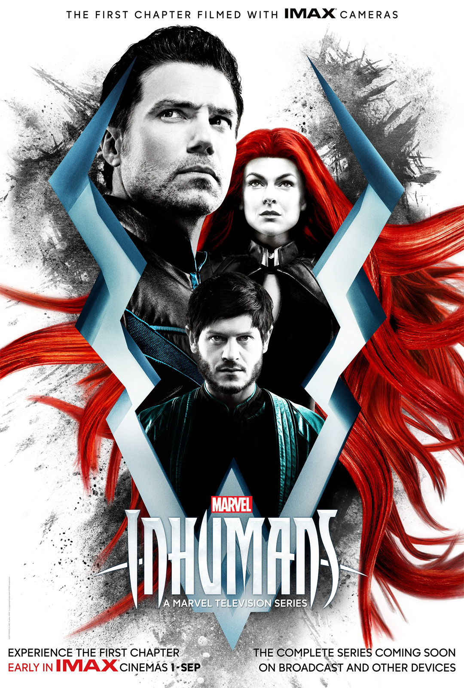
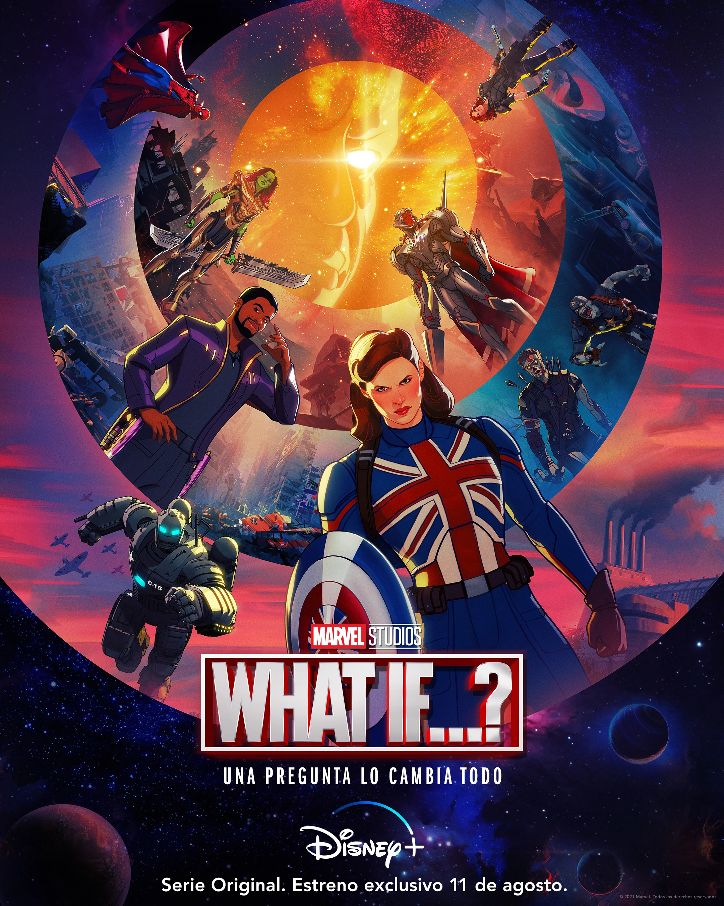
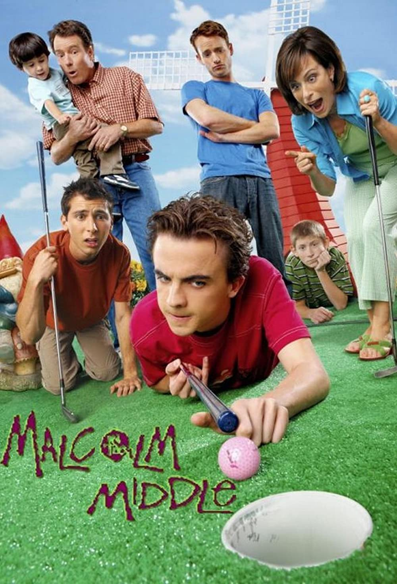
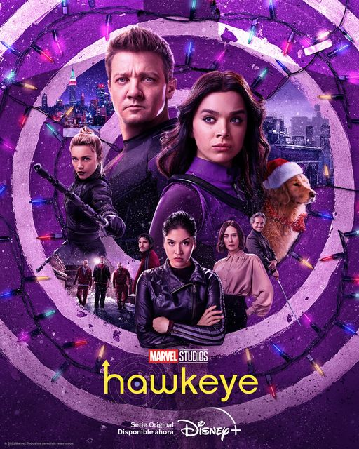

Marvel's Inhumans
 Accion, Ciencia Ficcion, Aventura, Marvel ComicsBlack Bolt es el rey de Attilan y su voz es tan poderosa que un simple susurro podría devastar una ciudad. Sin embargo, un golpe de estado lo obliga a escapar a Hawái con su esposa, su hermano y rival, sus primos y su cuñada.
Moon Knight
 Aventura, Acción, Terror psicológico, Marvel Comics
Aventura, Acción, Terror psicológico, Marvel Comics
La serie sigue a Steven Grant (Oscar Isaac), un empleado de una tienda de regalos que padece de afecciones en la memoria, quedándose en blanco o trayéndole recuerdos de otra vida. Steven descubre que tiene un trastorno de identidad disociativo, y que comparte cuerpo con el mercenario Marc Spector.
What If...?
 Ficción de superhéroes, Acción, Terror psicológico, Marvel ComicsWhat If...? le da un gran giro al UCM al reimaginar eventos famosos de las películas de formas inesperadas. La primera serie animada de Marvel Studios se centra en diferentes héroes del UCM, con un elenco de voces que incluye a varias estrellas retomando sus papeles.
Malcolm in the Middle
 Comedia, Drama, Telecomedia, AventuraEste chico es un joven adolescente superdotado que intenta sobrevivir en una torpe familia disfuncional. Malcolm tendrá que hacer frente a sus problemas en la escuela y a las batallas organizadas por sus hermanos en casa; en un continuo y confuso debate entre la niñez y la adolescencia.
Gotham
 Drama, Acción, Ciencia ficción, Ficción de superhéroes.
Drama, Acción, Ciencia ficción, Ficción de superhéroes.
El detective James Gordon se desenvuelve por el mundo peligrosamente corrupto de Gotham City, mientras que un joven Bruce Wayne encuentra su camino para convertirse en un héroe.
The Flash
 Accion, Ciencia Ficcion, Aventura, Marvel Comics
Accion, Ciencia Ficcion, Aventura, Marvel Comics
Nueve meses después de que el laboratorio S.T.A.R. explotara, Barry despierta del coma y descubre que tiene el poder de la súper velocidad. Con la ayuda de su nuevo equipo, Barry, denominado ahora `Flash', luchará contra el crimen en Ciudad Central.
Peaky Blinders
 Ficción histórica, Drama, Crimen
Ficción histórica, Drama, Crimen
Gran Bretaña vive la posguerra. Los soldados regresan, se acuñan nuevas revoluciones y nacen bandas criminales en una nación agitada. En Birmingham, una pandilla de gánsters callejeros asciende hasta convertirse en los reyes de la clase obrera.
Better Call Saul
 Comedia negra, Tragedia, Drama, Crimen
Comedia negra, Tragedia, Drama, Crimen
La serie narra los acontecimientos que llevan a McGuill a convertirse en Saul antes de trabajar con Walter White (Bryan Cranston), más conocido como Heisenberg, el narcotraficante más temido de Nuevo México.
Hawkeye
 Aventura, Acción, género policíaco, Marvel ComicsOjo de Halcón es una serie de Marvel que se centra en la historia del superhéroe Clint Barton que se encuentra en Nueva York junto a sus hijos tras los acontecimientos de Vengadores: Endgame, justo después del trágico Lapso.
Love, Death & Robots
 Comedia, Terror, Ficción histórica, Animación para adultos
Comedia, Terror, Ficción histórica, Animación para adultos
Una mujer llamada Sonnie controla remotamente a un monstruo genéticamente diseñado para batallas clandestinas de gladiadores. Un hombre rico le ofrece mucho dinero para perder, pero ella se niega. Después de que ella gana el combate, él regresa para hacerla pagar, solo para descubrir que él tiene las cosas complicadas.